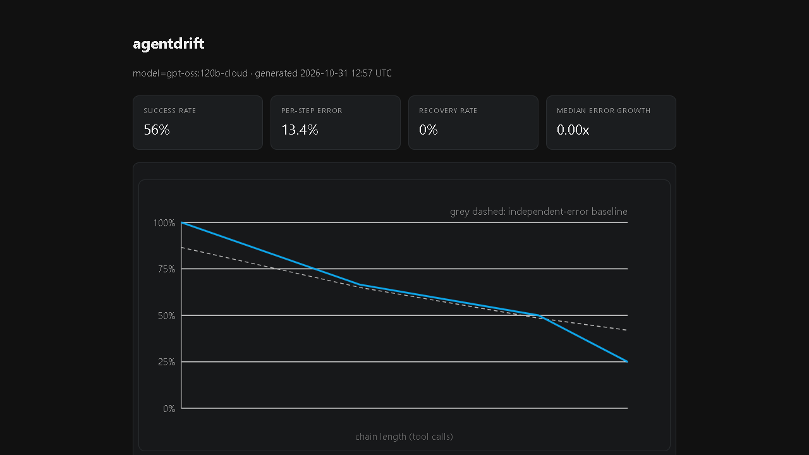
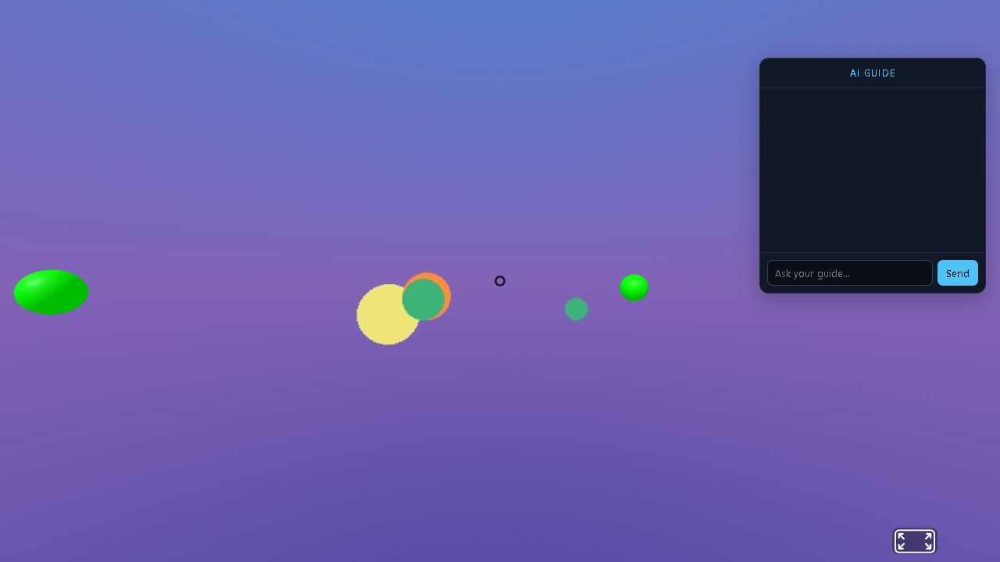

Selected work
Three open projects. Every number on the benchmark pages comes from a held-out test split, read straight from the result files.
N-body ML Surrogates
Bachelor thesis work. Learned surrogates for gravitational N-body dynamics, trained at body counts from 10 to 100, then validated out of distribution on real Solar-System initial conditions. Includes a rollout-stability benchmark comparing autoregressive compounding across architectures.
Source and benchmark site
agentdrift
An eval harness for LLM agents: measures how a single bad tool call compounds along a trajectory until the final answer breaks. Onset-based per-step error estimation, recovery rates, amplification against the independent-error baseline. Validated on a deterministic simulation backend; runs against any OpenAI-compatible model.
Source
VR Web App
A virtual-reality tour platform in the browser: 360 panorama viewer with hotspots, plus an AI guide agent backed by a local LLM that answers questions about the tour and teleports the camera on request.
Source